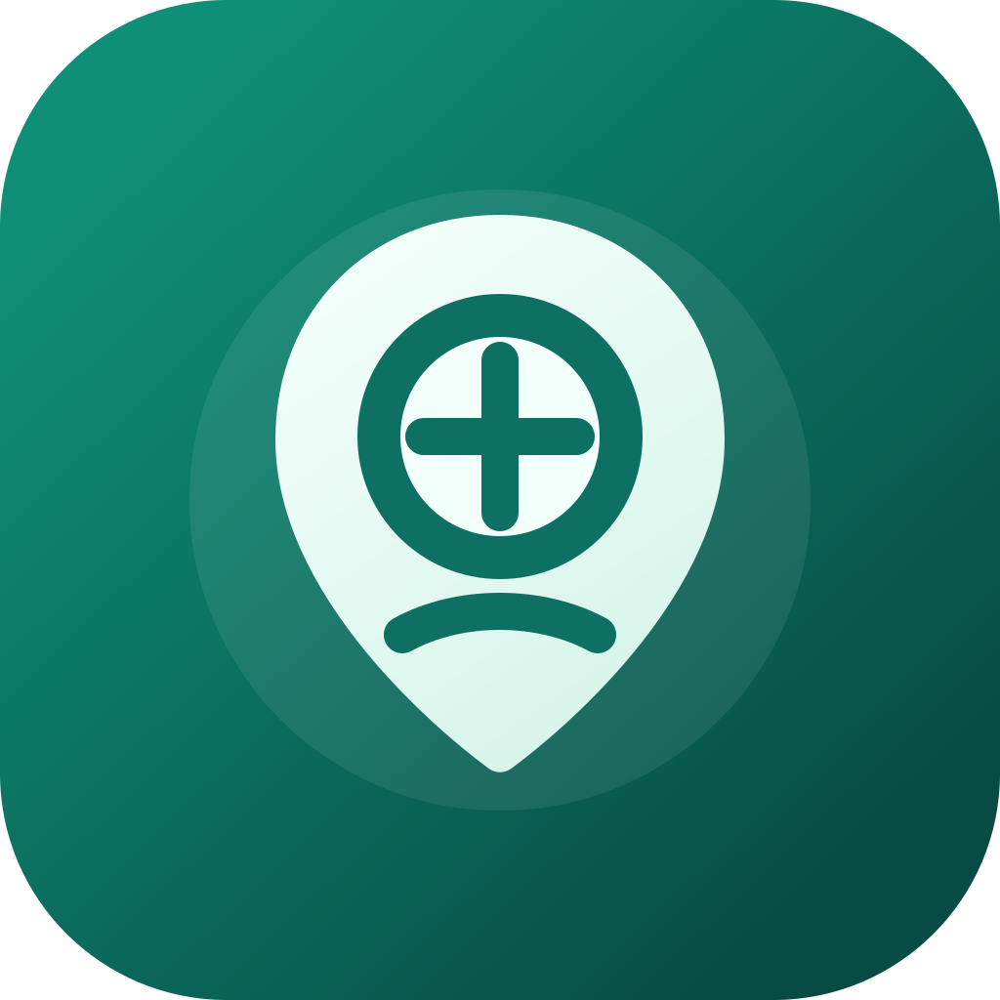
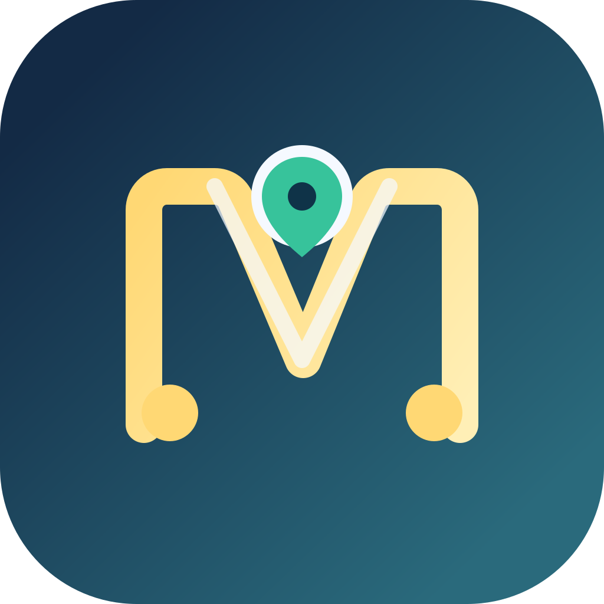
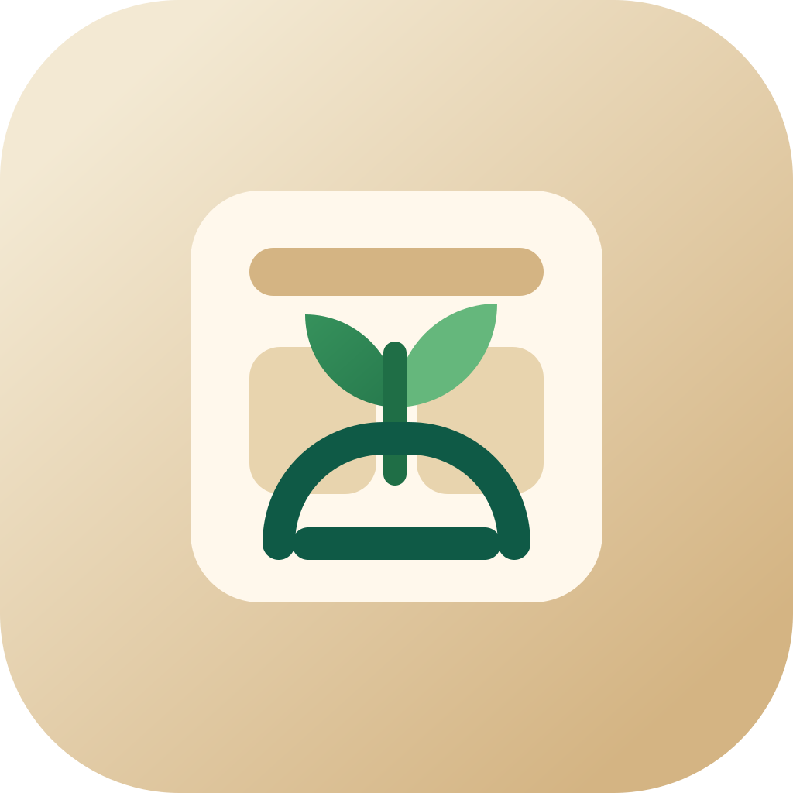
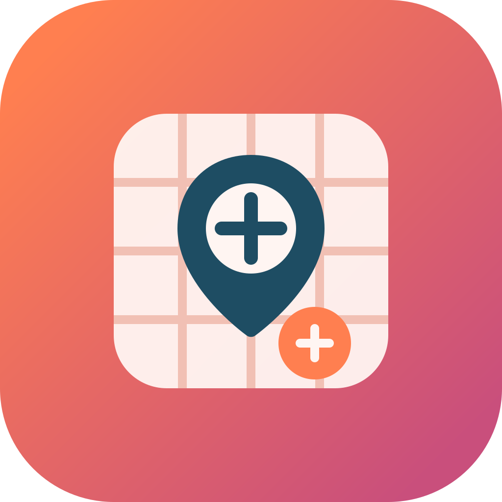

1. Pin + Plate
The clearest app-store direction. It reads as food plus location immediately and feels friendly and modern.
Four starter directions for the MealMap app icon. Each one emphasizes a different part of the product: location-aware meal discovery, route/planning, pantry freshness, and structured kitchen mapping.

The clearest app-store direction. It reads as food plus location immediately and feels friendly and modern.

A more premium monogram route. Good if we want MealMap to feel slightly smarter and more product-led.

Leans into pantry freshness, ingredients, and low-waste planning. Feels warm, homey, and approachable.

A more system-oriented direction with a mapped kitchen/grid feel. Stronger if we want a tech-forward brand.